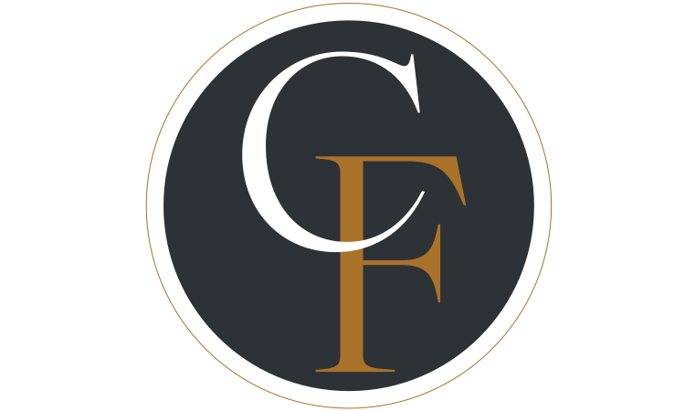
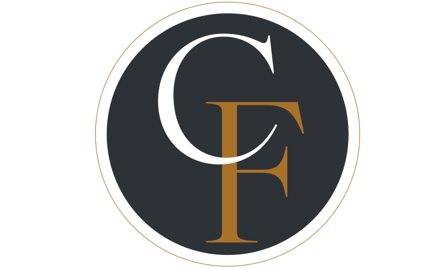

Au Coeur de la France
IDENTITE VISUELLE/ collaboration - logotype - mockups
Collaboration avec des étudiants du BTS MHR
issus du lycée du Gué à Tresmes.
Dans le cadre
d’un cours de «mercatique», les étudiants devaient
créer une restaurant de A à Z comprenant
la carte et le business d’un restaurant avec un
nom et une identité de marque. Au Coeur de la
France est un restaurant qui propose des plats
traditionnels et revisités de la gastronomie française.
Il prône de l’excellence accessible tous.
De ce fait, un choix radical a été décidé afin de reconnaître cette marque: un monogramme. Le but étant non pas de se démarquer mais plutôt de reprendre certains codes liés aux restaurants gastronomiques français. Non pas le cliché «bleu, blanc, rouge», mais plutôt une luxure dorée liée à un héritage culturel. L’imbrication d’initiales permet de comprendre le «au coeur de...» avec une rencontre entre le restaurant et ses clients. Un choix typogaphique raffiné et issu d’une tradition constitue le coeur de l’identité et du typogramme et de sa déclinaison en monogramme. Pour ce projet, il a été important de décider d’une ambiance vitrine et de rendus print pour que les étudiant puissent visualiser leur restaurant de la manière la plus authentique possible.
 

Les éléments qui constituent le menu du restaurant ont été déterminés avec précision par les étudiants d’hôtellerie et restauration. Entre reprise de plats typiques français et revisité de manière plus «accessible» au niveau des prix, l’idée a été de s’axer sur de la sobriétéavec un brin d’élégance. La déclinaison du logotype à permis qu’il se fonde plus facilement sur ce type de supports. Il a fallu être clair et délivrer l’information de la manière la plus simple et rapide. Une reprise du code couleur de l’identité a été nécessaire pour reconnaître la marque tout en gardant le choix typographique.